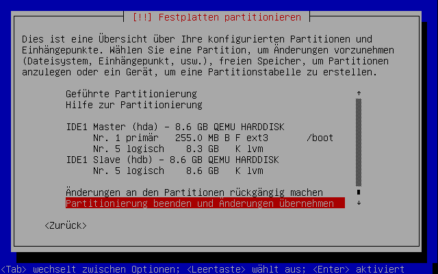
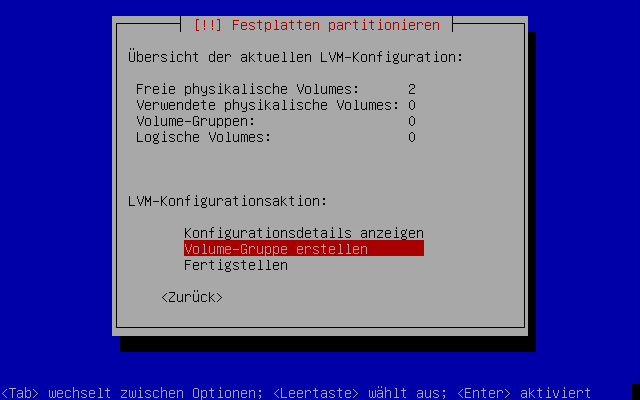
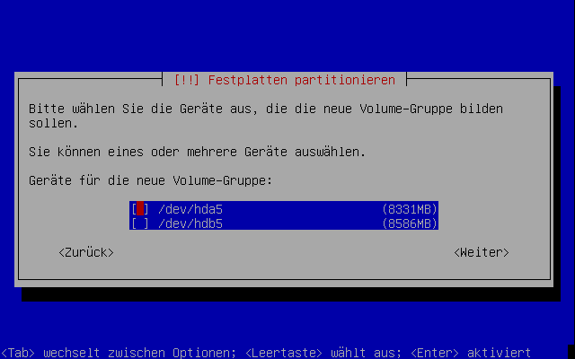
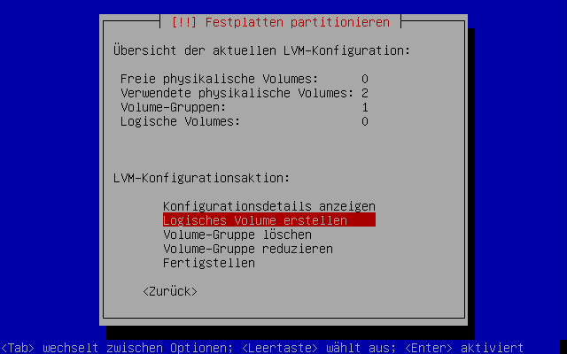
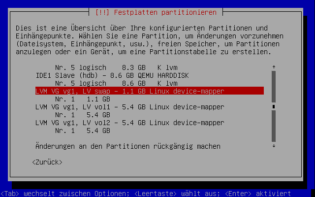
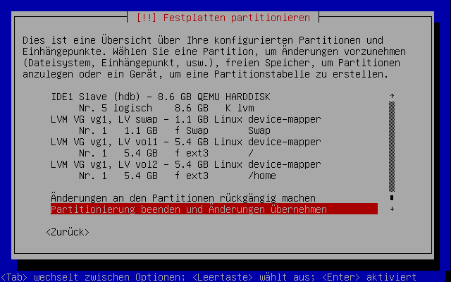

Wiki
Mitmachen
- Wikiartikel anlegen
- Howto anlegen
- Wiki-Referenz
- Wiki-Syntax
- Baustellen
- Artikelideen
- Ungetestete Artikel
- Ausbaufähige Artikel
- Fehlerhafte Artikel
- Rund ums Wiki
Konfiguration
- Backlinks anzeigen
- Exportieren
Alternate Installation
Artikel für fortgeschrittene Anwender
Dieser Artikel erfordert mehr Erfahrung im Umgang mit Linux und ist daher nur für fortgeschrittene Benutzer gedacht.
Dieser Artikel wurde für die folgenden Ubuntu-Versionen getestet:
Ubuntu 16.04 Xenial Xerus
Ubuntu 14.04 Trusty Tahr
Zum Verständnis dieses Artikels sind folgende Seiten hilfreich:
Dieser Artikel behandelt die Installation von Lubuntu bis inkl. 16.04 auf ein LVM mit Hilfe der Alternate Installation.
Starten der Installation¶
Die Installation unterscheidet sich nicht von einer normalen Alternate Installation, lediglich ab dem Punkt Partitionierung muss dieser Anleitung gefolgt werden. Empfehlung für die Partionierung findet man unter Dateisystem.
Partitionierung¶
Geführt¶
Die Partitionierungsmethode "Geführt - gesamte Platte verwenden und LVM einrichten" kann verwendet werden, wenn man später eine zusätzliche Festplatte in das System einbauen möchte. Das Installationsprogramm legt hierbei eine ca. 250 MByte große /boot-Partion an und verwendet den Rest der Festplatte als Physical Volume für LVM. Es wird automatisch eine Volume Group angelegt, die 2 Volumes enthält:
Swap - So groß wie der vorhandene Arbeitsspeicher
/-Dateisystem - Dies nimmt den Rest der Volume Group ein
Es ist daher zu prüfen, ob diese Partitionierung sinnvoll ist bzw. den eigenen Vorstellungen entspricht.
Manuell¶
Im Installationsprogramm erstellt man zuerst eine /boot-Partition; in der Regel reichen hierfür 200 - 250 MByte. Für den Speicher, den man in Zukunft im LVM haben möchte, muss man eine neue Partition mit dem Typ physikalisches Volume für LVM anlegen. So könnte das später in etwa aussehen:

Anlegen der Volume Groups¶
Als nächster Schritt muss nun das LVM konfiguriert werden. Dazu wählt man den Menüpunkt "Logical Volume Manager konfigurieren". Zunächst müssen die Partitionen auf die Festplatten geschrieben werden. Dies bestätigt man im Dialog mit "Ja". Nun muss zuerst eine "Volume Group" erstellt werden. Dazu wählt man den Menüpunkt "Volume-Gruppe erstellen" (siehe Screenshot).

Nun muss der Name der Volume Group eingegeben werden, z.B. vg1. Im Anschluss daran müssen die Partitionen ausgewählt werden, die zu der Volume Group gehören (siehe nächster Screenshot). Es können nur die Partitionen ausgewählt werden, die zuvor als physikalisches Volume für LVM deklariert wurden.

Anlegen der Logical Volumes¶
Als nächster Schritt können die Logical Volumes angelegt werden. Für jedes Verzeichnis, das in einer eigenen Volume sein soll, muss ein Volume angelegt werden. Es ist der Menüpunkt "Logisches Volume erstellen" zu wählen (siehe Screenshot), danach ist die Volume Group auszuwählen, in der das Logical Volume erstellt werden soll. Es muss der Name des Volumes angegeben werden und die Größe muss festgelegt werden.

Hinweis:
Auch wenn es möglich ist die Größe nachträglich zu verändern, sollte man sich sehr genau überlegen, wie groß jedes Volume werden soll. Ein nachträgliches Ändern ist eine komplizierte administrative Aufgabe! Außerdem sollte freier Speicherplatz nicht einem Volume zugesprochen werden, sondern freigehalten werden, um später bei Bedarf ein Volume zu vergrößern.
Nachdem alle Logical Volumes erstellt wurden, beendet man die LVM Konfiguration über den Menüpunkt "Fertigstellen". Man gelangt nun wieder in das Partitionierungsmenü, in dem nun die einzelnen Logical Volumes ebenfalls aufgelistet werden:

Dateisysteme und Mountpoints festlegen¶
Als nächster Schritt ist jedes Volume auszuwählen und es muss ein Dateisystem darin erstellt sowie der Mount-Punkt gesetzt werden. Danach erhält man eine Übersicht wie in dem folgenden Screenshot:

Nun kann man die Einrichtung des LVM mit dem Menüpunkt "Partitionierung beenden und Änderung übernehmen" abschließen. Der Rest der Installation verläuft wie gewohnt.
Diese Revision wurde am 9. Mai 2017 00:05 von Shakesbier erstellt.
- Erstellt mit Inyoka
-
 2004 – 2017 ubuntuusers.de • Einige Rechte vorbehalten
2004 – 2017 ubuntuusers.de • Einige Rechte vorbehalten
Lizenz • Kontakt • Datenschutz • Impressum • Serverstatus -
Serverhousing gespendet von